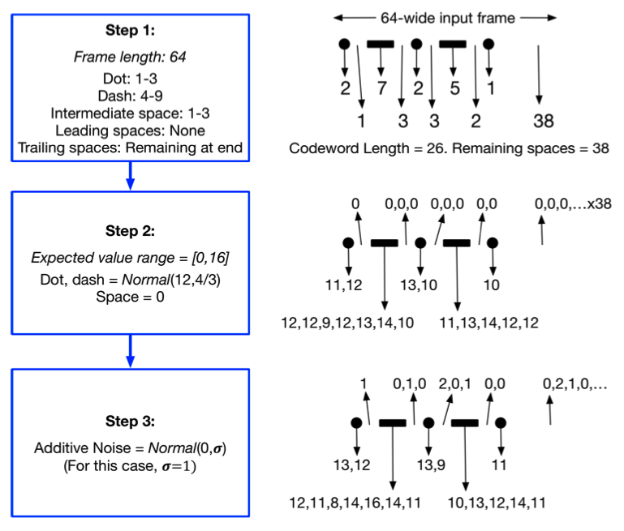

This dataset was constructed by using the findings of the following publication:
Sourya Dey, Keith Chugg, Peter Beerel: https://arxiv.org/pdf/1807.04239.pdf

This method of generating synthetic morse code provides the ability to adjust
the amount of noise in the data. Noise was defined in a random distribution
centered around 0, with a variable standard deviation to change the difficulty
of the problem solved by the network.